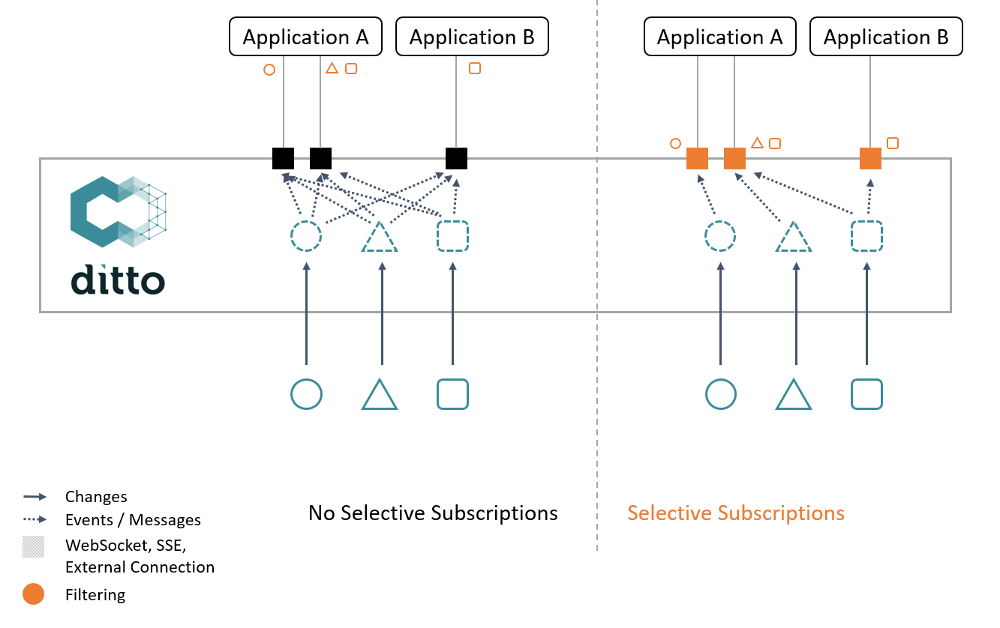
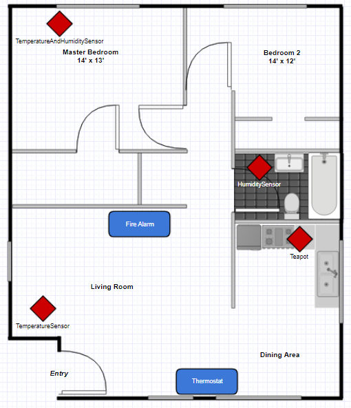
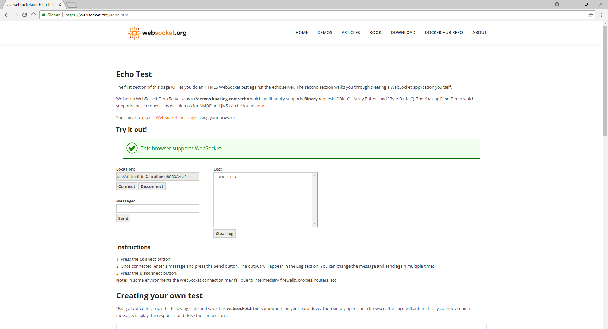

Selective push notifications available
Published by 
The connectivity service supercharged Ditto’s flexibility in integrating with other services. It’s such a great feature to let the other connected services know about thing updates and property changes. Even the direct exchange with real-world assets became more flexible through the multi-protocol support. But with a steady increase in connected devices, those messages easily sum up to a huge number.
message as synonym for both Ditto
signals and messages.Also, not every consuming application needs to know everything that’s going on. In fact, the only use case that requires processing of every message is logging. Therefore most of the times an application waits for a specific message to trigger a specific action. So all other messages are discarded unused. This adds a lot of unnecessary overhead both to the message transport capabilities and the processing of messages at the receiving end.
But what if you could avoid receiving those messages at all.
Well, you can!
This is exactly what selective push notifications do:
Configurable message filters that are applied to Ditto’s publishing connection before anything goes on the line.
They can help you with a lot of problems in a bunch of scenarios:
- Bandwidth limitations: The amount of occurring events is too large and/or frequent to be delivered via the available channels. With selective message filters, you can mute the noise in your event stream.
- Information hiding: Let consuming services only know what they need to know. Message filters allow you to control all published content in great detail.
- Specialized notifications: A specific event filter can be used to set a value thresholds or a status-change trigger. This removes the burden of implementing filter logic on the application side.
- Event routing: Create multiple connections with Ditto’s connectivity service and route your events through those aligned with your requirements. All by specifying appropriate filters for your connection targets.
The following diagram visualizes this context:

With the upcoming Ditto release 0.8.0-M2, those filters are available for the following endpoints:
- WebSocket
- Server-Sent Events (SSE)
- All supported connectivity protocols (AMQP 0.9.1, AMQP 1.0 / Eclipse Hono, MQTT)
You can use a basic namespace filter on the following topics:
- Twin events
- Live events
- Live messages
- Live commands
This filter is a comma-separated list of selected namespaces. It only allows messages related to one of the given namespaces.
Furthermore, there is an additional RQL filter for an advanced description of twin and live events. Powered by the mighty syntax of Ditto’s search API it allows configuring the selected events in the same manner as you search for things.
Check out the documentation for more information on options and configuration.
A simple example
Imagine you have a flat with multiple environmental sensors: Some measure temperature, some humidity and some both. This information can be useful for different applications. In our case, a smart thermostat uses the sensor data to control the indoor climate and there is also a fire alarm installed that detects fires by abnormal high measured temperatures
The following figure displays this setting:

So let’s start with the prerequisites. You need:
- A running Ditto instance with a valid user (You can follow our Hello World example to create one). This example uses dittos default user on a locally running instance.
- A tool for executing HTTP requests (e.g. Ditto’s Swagger API, cURL, Postman). We use this to create our twins and simulate the sensors.
- A modern browser supporting WebSockets. This example uses websocket.org as a websocket client. The site will tell you if your browser supports the WebSocket protocol. We will mock our applications this way.
The digital twins
First we configure our sensors digital twins:
A temperature sensor
curl -X PUT -u 'ditto:ditto' --header 'Content-Type: application/json' -d \
'{
"features": {
"environmentSensor": {
"properties": {
"temperature": 0.0
}
}
}
}' \
'http://localhost:8080/api/2/things/org.eclipse.ditto%3ATemperatureSensor'
A humidity sensor
curl -X PUT -u 'ditto:ditto' --header 'Content-Type: application/json' -d \
'{
"features": {
"environmentSensor": {
"properties": {
"humidity": 0
}
}
}
}' \
'http://localhost:8080/api/2/things/org.eclipse.ditto%3AHumiditySensor'
A combined temperature and humidity sensor
curl -X PUT -u 'ditto:ditto' --header 'Content-Type: application/json' -d \
'{
"features": {
"environmentSensor": {
"properties": {
"temperature": 0.0,
"humidity": 0
}
}
}
}' \
'http://localhost:8080/api/2/things/org.eclipse.ditto%3ATemperatureAndHumiditySensor'
And finally, a teapot
curl -X PUT -u 'ditto:ditto' --header 'Content-Type: application/json' -d \
'{}' \
'http://localhost:8080/api/2/things/org.eclipse.ditto%3ATeapot'
Mocking the consuming applications
Open your browser on https://websocket.org/echo.html. This site allows you to connect with any WebSocket endpoint and supports simple sending and receiving of messages. The interface is shown below:

Enter Ditto’s WebSocket endpoint with user credentials ws://ditto:ditto@localhost:8080/ws/2 and hit the Connect button.
The log output should confirm the action by printing a simple CONNECTED.
This means the socket is open and you’re able to receive messages from Ditto. But first, you should let Ditto know in what kind of messages you’re interested. This interest differs for both of the example applications:
The thermostat app only needs to know every humidity and temperature report so you can define a filter for change events on twins having those properties:
START-SEND-EVENTS?filter=or(exists(features/environmentSensor/properties/temperature),exists(features/environmentSensor/properties/humidity))
Paste it into the Message input and use the Send button to post it. Ditto should acknowledge with a START-SEND-EVENTS:ACK.
That’s it for our thermostat app, let’s proceed to the fire alarm. Open https://websocket.org/echo.html again in a separate tab and repeat the connection process. But instead of consuming all temperature and humidity reports, we only want to be notified when a specific temperature threshold is exceeded. 90°C seems to be a solid value for this:
START-SEND-EVENTS?filter=gt(features/environmentSensor/properties/temperature,90)
After receiving Ditto’s acknowledgment, you’re done with the configuration.
Report mocked sensor values to Ditto
Use Ditto’s HTTP API to send mocked data on behalf of our sensors. First report a new humidity value for the humidity sensor:
curl -X PUT -u 'ditto:ditto' --header 'Content-Type: application/json' -d \
'55' \
'http://localhost:8080/api/2/things/org.eclipse.ditto%3AHumiditySensor/features/environmentSensor/properties/humidity'
Now check both websocket.org tabs. The thermostat tab should have received an event with the reported value while nothing happened in the alarm tab.
Continue with some temperature data from another sensor:
curl -X PUT -u 'ditto:ditto' --header 'Content-Type: application/json' -d \
'23' \
'http://localhost:8080/api/2/things/org.eclipse.ditto%3ATemperatureAndHumiditySensor/features/environmentSensor/properties/temperature'
The value change should be reported to the thermostat, but still no events for the alarm tab.
Finally it’s time to start a fire. Report a very high temperature for the third sensor:
curl -X PUT -u 'ditto:ditto' --header 'Content-Type: application/json' -d \
'120' \
'http://localhost:8080/api/2/things/org.eclipse.ditto%3ATemperatureSensor/features/environmentSensor/properties/temperature'
Now both applications should have received the reported data, and the fire alarm can use this event to (virtually) trigger its bell.
But what about the teapot? Let him declare his identity by setting a personal message:
curl -X PUT -u 'ditto:ditto' --header 'Content-Type: application/json' -d \
'{
"properties": {
"message": "I'\''m a teapot"
}
}' \
'http://localhost:8080/api/2/things/org.eclipse.ditto%3ATeapot/features/status'
Unfortunately, no one cares and this no one is notified about that change.
We do hope that you care about this feature, we think it’s really awesome.

–
The Eclipse Ditto team